rm(list=ls())
library(nhanesA)
library(tidyverse)Dosing and Body Size
Thesis
The pharmacokinetics of both large and small molecules scale by body weight between (e.g., animal to human dose preditions) and within (e.g., adult to pediatric dose predictions). The genereal functional form for this scaling relationship is the power model. Given most drugs are dosed to target average expoosure (Cavg, AUC), this relationship is described for clearance below, but can also be applied to central volume to target maximal (Cmax) concentration threshoods.
\[CL_i = WT_i^\alpha\] The magnitude of the scaling relationship with body weight (\(\alpha\)) and the therapeutic index determine the optimal dosing paradigm. Assuming that body weight is the primary covariate of clearance, one would want to use a metric for \(WT_i\) that results in an \(\alpha = 1\) in the target population.
To this end some authors have suggested testing a host of body size metrics (e.g., body weight [WT], body surface area [BSA], adjusted ideal body weight [AIBW]) using data from the first-in-human clinical study and selecting the metric that results in \(\alpha ~ 1\). This is a valid approach; however, it introduces the operational challenge of testing multiple correlated metrics as excoriates and selecting based on the estimation rather than evaluating a single metric (e.g., body weight). Furthermore, selection of alternative body size metrics, such ask AIBW, may complicate translation to external populations, such as pediatrics, in which these metrics are not validated.
I propose a simplified unified approach to evaluation of approach to assessing a body size metric for dosing to allow linear (e.g., mg / unit body size) calculation of dose amounts. As established previously, the relationship between the primary PK parameter for dosing (in this example CL) and body weigh can be described using a power unction (often centered on a reference weight, such as 70 kg):
\[CL_i = WT_i^\alpha\] This relationship (\(\alpha\)) can be estimated in population pharmacokinetic analysis of the first-in-human clinical trial. No other body size metrics need to be evaluated.
The body size metric (\(BSM_i\)) which most closely approximates a linear relationship with the primary PK parameter for dosing can be inferred from the fitted relationship of the PK parameter and body weight and the fitted relationship between body weight and the body size metric.
\[WT_i = BSM_i^\beta\] These two equations can be combined by substituting the second equation into the first for the value of the body size metric (\(WT_i\)) as follows:
\[CL_i = WT_i^\alpha = (BSM_i^\beta)^\alpha = (BSM_i)^\gamma\] If the objective is to identify a dose that is as close to linear (mg / \(BSM_i\)) as possible, then the goal should for \(\gamma ~ 1\). The value of \(\alpha\), the power by which the primary PK parameter for dosing scales with body weight, is estimated in a representative population. The value of \(\beta\), the power for the relationship between a body size metric and body weight, can be estimated from a large population (e.g., NHANES) or a representative sample of the target population.
The target then can be expressed simply a:
\[\gamma = \alpha * \beta =1 \] This approach can be explored using NHANES as a representative dataset of adult human clinical trial participants.
Set Up
Packages
NHANES Data
Read in the relevant datasets from the NHANES dataset. Remove mixxing values for key variables used to derive common body size metrics for dosing.
bmx <- nhanes("BMX")
demo <- nhanes("DEMO")
data <- left_join(bmx, demo) %>%
filter(!is.na(RIDAGEYR) & !is.na(RIAGENDR) & !is.na(BMXWT) & !is.na(BMXHT))Define Body Size Metrics
Derive alternative body size metrics (\(BSM_i\)) using the equations outined in Pai et al. 2012 (https://pubmed.ncbi.nlm.nih.gov/22711238/). Subset to adults and pivot to a longer version.
anthro <- data %>%
select(SEQN,
AGEYR = RIDAGEYR,
SEX = RIAGENDR,
WTKG = BMXWT,
HTCM = BMXHT,
BMIKGM2 = BMXBMI) %>%
mutate(BSAMOSM2 = signif(sqrt(WTKG*HTCM/3600),3),
BSADUBM2 = signif(0.007184 * (WTKG^0.425) * (HTCM^0.725),digits=3),
IBWKG = ifelse(SEX == "Male",
signif(50 + 2.3*((HTCM/2.54)-60),3),
signif(45.5 + 2.3*((HTCM/2.54)-60),3)),
IBWKG = signif(IBWKG, digits=3),
AIBWKG = signif(IBWKG + 0.4*(WTKG-IBWKG), digits=3),
FFWKG = ifelse(SEX == "Male",
signif((0.285 * WTKG) + (12.1 * (HTCM/100)^2),3),
signif((0.287 * WTKG) + (9.74 * (HTCM/100)^2),3)),
LBWKG = ifelse(SEX == "Male",
signif((9270 * WTKG) / (6680 + 216 * BMIKGM2),3),
signif((9270 * WTKG) / (8780 + 244 * BMIKGM2),3))
)
anthro_adult <- anthro %>%
filter(AGEYR>18)
anthro_adult_long <- anthro_adult %>%
pivot_longer(WTKG:LBWKG, names_to = "METRIC", values_to = "VALUE")Vector of variable names for body siee metrics of interest.
params <- c("HTCM", "BMIKGM2", "BSAMOSM2", "BSADUBM2", "IBWKG", "AIBWKG", "FFWKG", "LBWKG")Define dataset for plotting with some additional derived variables.
plotdata_long <- anthro_adult_long %>%
mutate(UNITS = case_when(grepl("KGM2", METRIC) ~ "KG/M2",
grepl("KG", METRIC) ~ "KG",
grepl("M2", METRIC) ~ "M2",
grepl("CM", METRIC) ~ "CM"))Exploatory Analysis
Distributions
Visualize the distributions of the various body size metrics.
ggplot(aes(x=VALUE, color = METRIC, fill = METRIC), data = plotdata_long) +
geom_density(alpha = 0.7) +
facet_wrap(~UNITS, scales = "free")+
theme_bw() 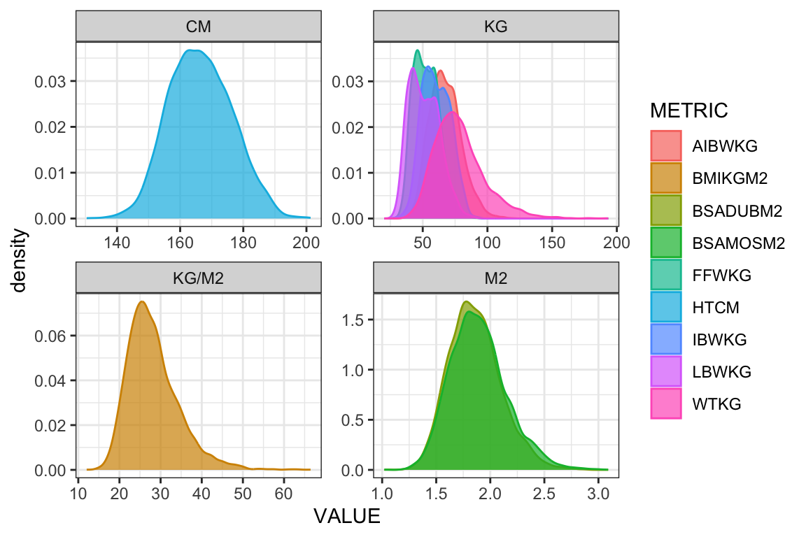
ggplot(aes(x=VALUE, color = METRIC, fill = METRIC), data = plotdata_long) +
geom_density(alpha = 0.7) +
scale_x_log10(guide = "axis_logticks")+
theme_bw()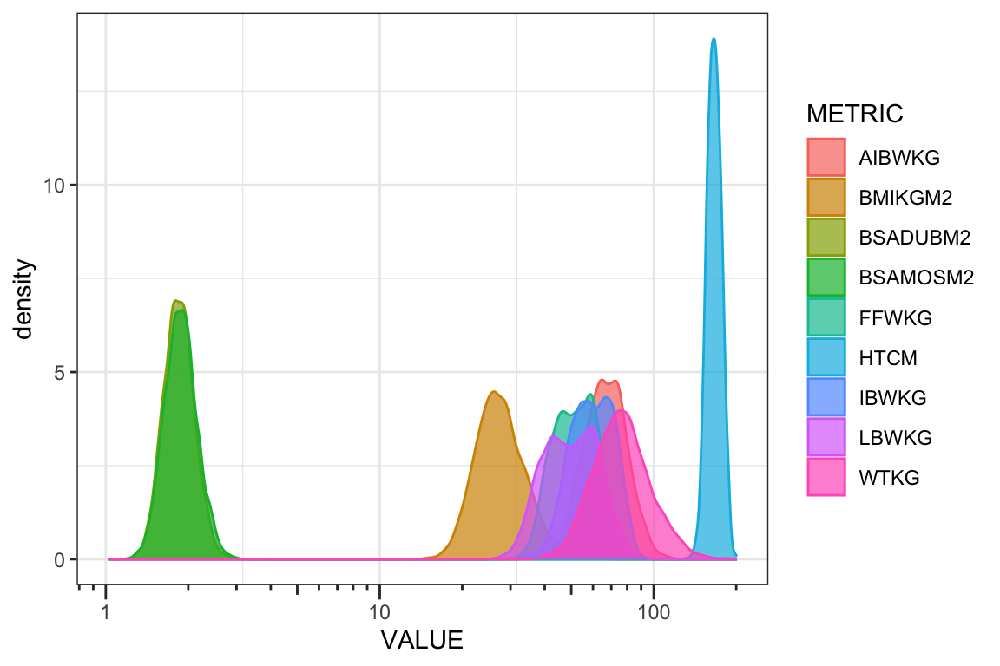
Fit the log-log regression
Fit log-log regressions based on NHANES to determine the \(\beta\) values.
sumfit_loglog <- function(exp_var_x,
exp_var_y = "WTKG",
method = "normal",
ci = 0.95,
sigdigits = 3) {
if(!method %in% c("normal", "tdist")) {rlang::abort(message = "argument `method` must be 'normal' or 'tdist'")}
if(!ci %in% c(0.90, 0.95)) {rlang::abort(message = "argument `ci` must be 0.90 or 0.95")}
form <- stats::as.formula(paste(paste0("log(",exp_var_y,")"),"~",paste0("log(",exp_var_x,")")))
fit <- stats::lm(form, anthro_adult)
int <- stats::coef(fit)[[1]]
est <- stats::coef(fit)[[2]]
se <- sqrt(diag(stats::vcov(fit)))[[2]]
z <- stats::qt((1 + ci)/2, (length(fit$residuals)-1))
tab <- data.frame(
DV = exp_var_x,
IDV = exp_var_y,
CI = paste0(ci*100, "%"),
Intercept = signif(int, digits=sigdigits),
Beta = signif(est, digits = sigdigits),
StandardError = signif(se, digits=sigdigits),
LCL_Beta = dplyr::case_when(method == "normal" & ci == 0.95 ~ signif(est - 1.96*se, digits=sigdigits),
method == "normal" & ci == 0.90 ~ signif(est - 1.64*se, digits=sigdigits),
method == "tdist" ~ signif(est - z*se, digits=sigdigits),
.default = NA_real_),
UCL_Beta = dplyr::case_when(method == "normal" & ci == 0.95 ~ signif(est + 1.96*se, digits=sigdigits),
method == "normal" & ci == 0.90 ~ signif(est + 1.64*se, digits=sigdigits),
method == "tdist" ~ signif(est + z*se, digits=sigdigits),
.default = NA_real_))
return(tab)
} fit <- map_df(params, sumfit_loglog) fit_labels <- fit %>%
mutate(`Beta (95% CI)` = paste0(Beta, " (95% CI: ",LCL_Beta," - ", UCL_Beta,")"),
BSM = case_when(DV == "HTCM" ~ "Height (cm)",
DV == "BMIKGM2" ~ "BMI (kg/m2)",
DV == "BSAMOSM2" ~ "BSA-Moesteller (m2)",
DV == "BSADUBM2" ~ "BSA-DuBois (m2)",
DV == "WTKG" ~ "Body Weight (kg)",
.default = paste(gsub("KG", "", DV), "(kg)"))
) %>%
mutate(BSM = factor(BSM,
levels = c("Height (cm)",
"BSA-DuBois (m2)" ,
"BSA-Moesteller (m2)",
"AIBW (kg)",
"FFW (kg)",
"BMI (kg/m2)",
"LBW (kg)",
"IBW (kg)",
"Body Weight (kg)")))
summary_fit <- fit_labels %>%
mutate(GAMMA_ALPHA01 = signif(Beta*0.1, digits=3),
GAMMA_ALPHA03 = signif(Beta*0.3, digits=3),
GAMMA_ALPHA05 = signif(Beta*0.5, digits=3),
GAMMA_ALPHA07 = signif(Beta*0.7, digits=3),
GAMMA_ALPHA09 = signif(Beta*0.9, digits=3),
GAMMA_ALPHA10 = signif(Beta, digits=3),
GAMMA_ALPHA13 = signif(Beta*1.3, digits=3),
GAMMA_ALPHA15 = signif(Beta*1.5, digits=3),
GAMMA_ALPHA17 = signif(Beta*1.7, digits=3),
GAMMA_ALPHA20 = signif(Beta*2, digits=3))
summary_fit_long <- summary_fit %>%
pivot_longer(GAMMA_ALPHA01:GAMMA_ALPHA20, names_to = "Alpha", values_to = "Gamma") %>%
mutate(Alpha = as.numeric(gsub("[^0-9]+", "", Alpha))/10)
fit_labels DV IDV CI Intercept Beta StandardError LCL_Beta UCL_Beta
1 HTCM WTKG 95% -5.360 1.900 0.05130 1.800 2.000
2 BMIKGM2 WTKG 95% 1.070 0.983 0.00841 0.966 0.999
3 BSAMOSM2 WTKG 95% 3.250 1.720 0.00499 1.710 1.730
4 BSADUBM2 WTKG 95% 3.240 1.780 0.00818 1.760 1.790
5 IBWKG WTKG 95% 1.860 0.607 0.01730 0.573 0.641
6 AIBWKG WTKG 95% -0.619 1.180 0.00941 1.160 1.200
7 FFWKG WTKG 95% 0.175 1.050 0.01080 1.030 1.070
8 LBWKG WTKG 95% 1.030 0.845 0.00921 0.827 0.863
Beta (95% CI) BSM
1 1.9 (95% CI: 1.8 - 2) Height (cm)
2 0.983 (95% CI: 0.966 - 0.999) BMI (kg/m2)
3 1.72 (95% CI: 1.71 - 1.73) BSA-Moesteller (m2)
4 1.78 (95% CI: 1.76 - 1.79) BSA-DuBois (m2)
5 0.607 (95% CI: 0.573 - 0.641) IBW (kg)
6 1.18 (95% CI: 1.16 - 1.2) AIBW (kg)
7 1.05 (95% CI: 1.03 - 1.07) FFW (kg)
8 0.845 (95% CI: 0.827 - 0.863) LBW (kg)Visualize the log-log relationship
Visualize log-log relationship between each metric and bdoy weight. Define function for plots.
concordplot <- function(metric, col_point = "grey30", col_fit = "black", shape_point = 22){
mod <- lm(log(anthro_adult[["WTKG"]]) ~ log(anthro_adult[[metric]]))
plot <- ggplot(aes(y = WTKG, x = !!sym(metric), col = SEX), data = anthro_adult) +
geom_point(shape = shape_point, alpha_point = 0.5)+
geom_smooth(method = "lm", se = FALSE, color = col_fit) +
geom_smooth(method = "loess", se = FALSE, color = col_point, linetype = "dashed") +
scale_x_log10(guide = "axis_logticks") +
scale_y_log10(guide = "axis_logticks") +
labs(caption = paste("Beta = ", fit_labels$`Beta (95% CI)`[fit_labels$DV==metric])) +
theme_bw()
return(plot)
}map(params, concordplot)[[1]]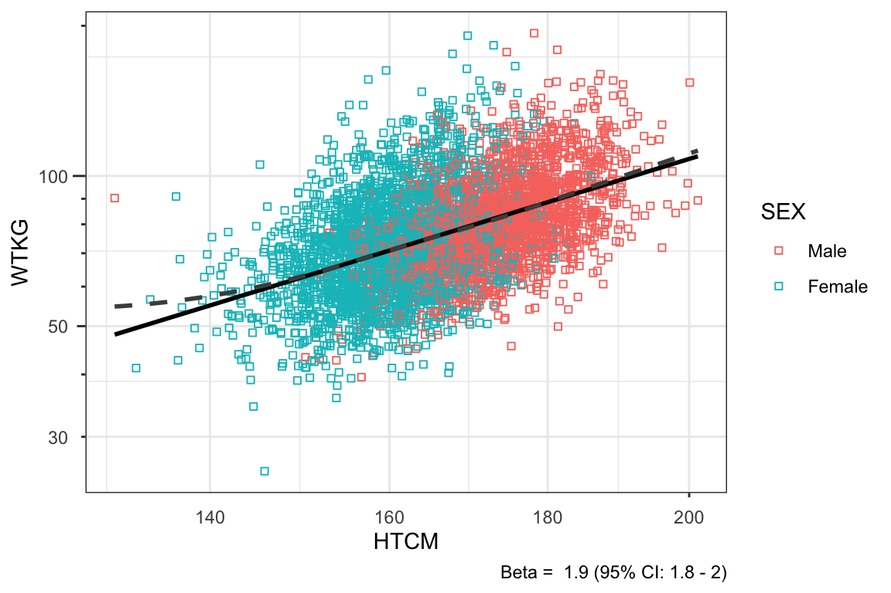
[[2]]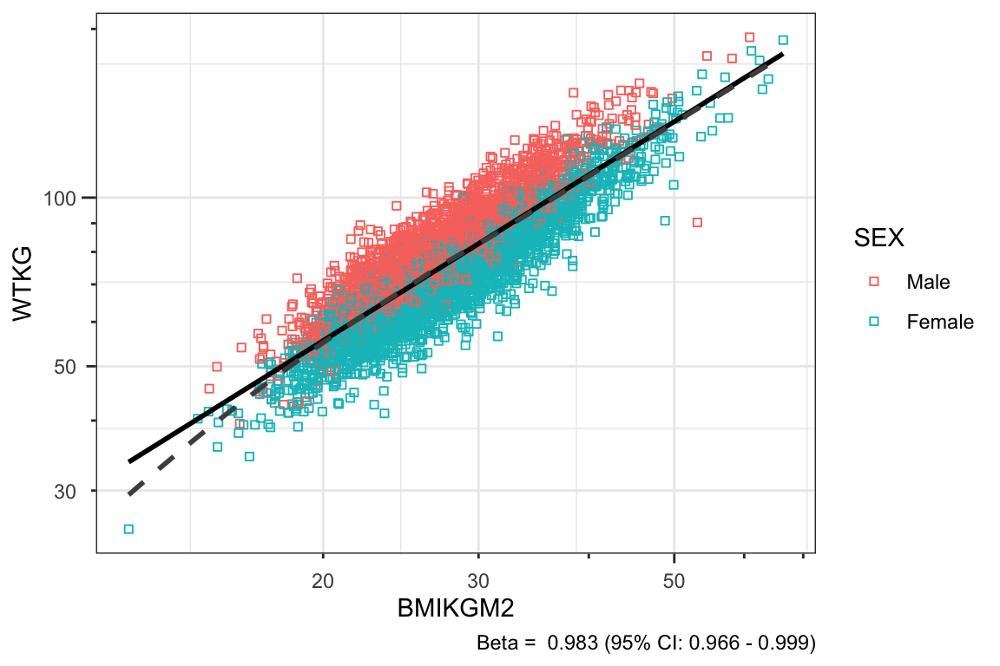
[[3]]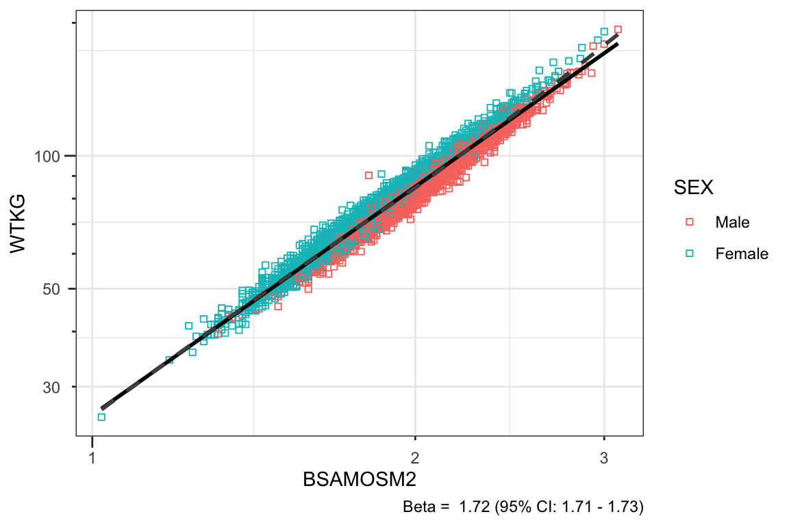
[[4]]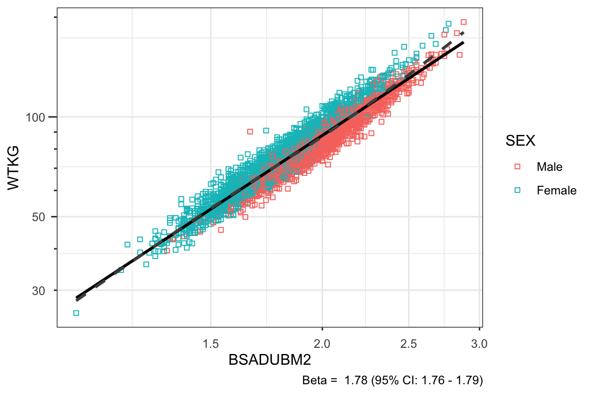
[[5]]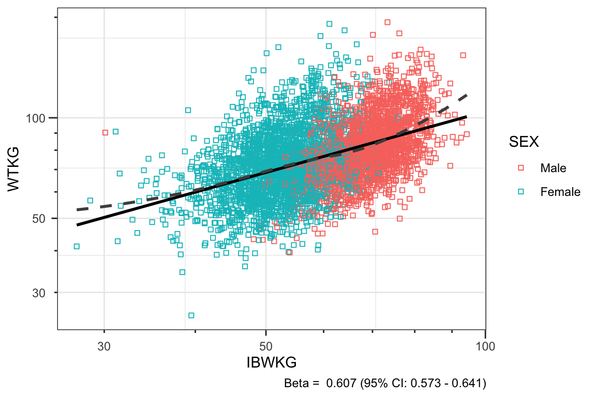
[[6]]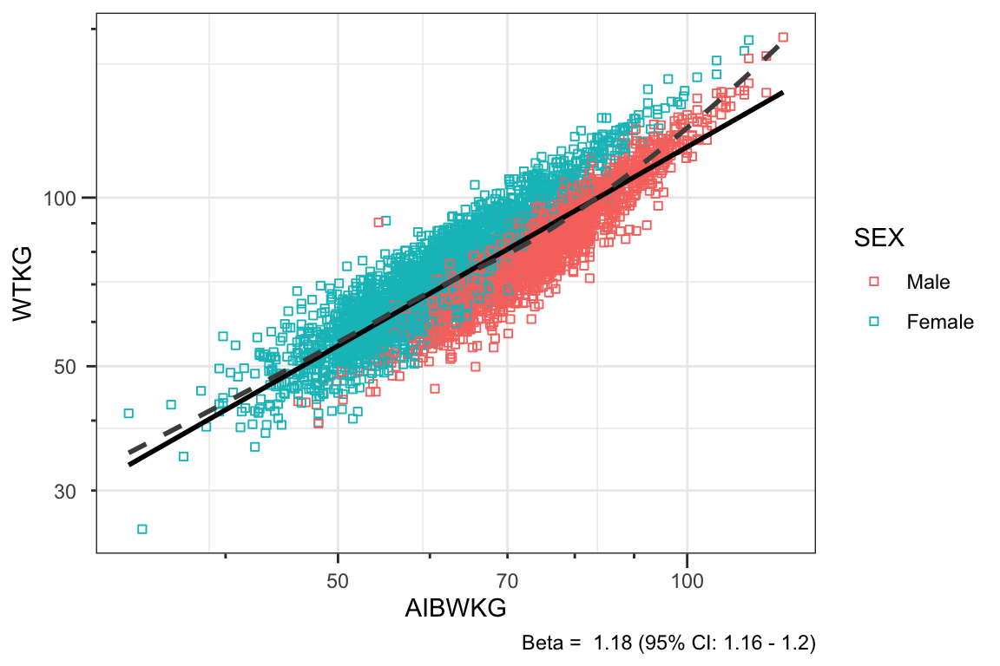
[[7]]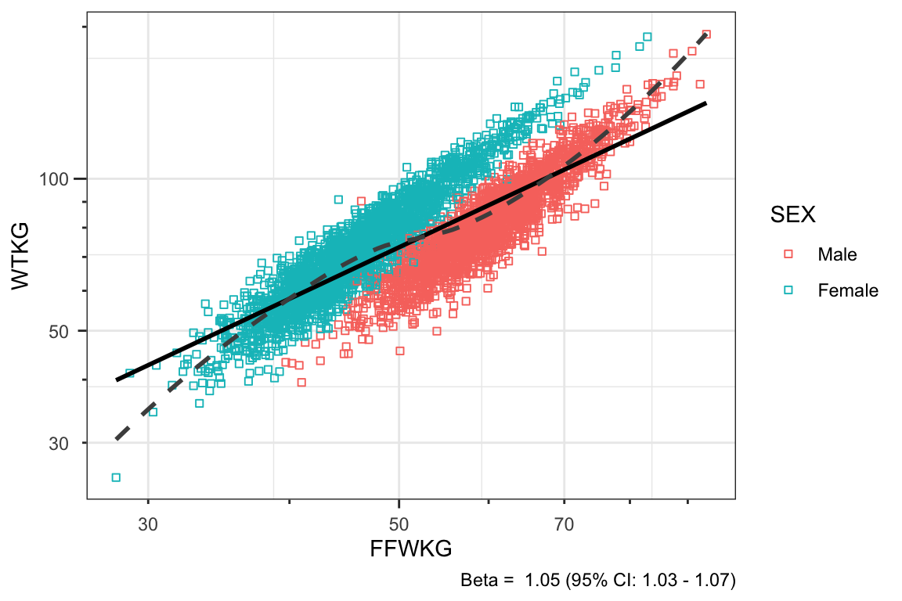
[[8]]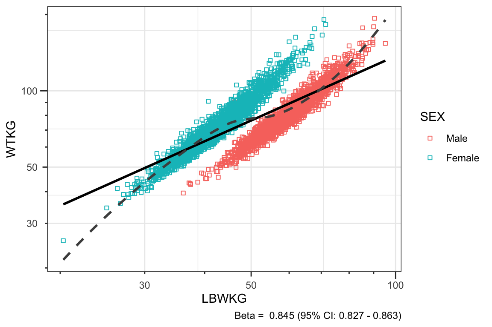
Plot
Plot the relationship between values of \(\alpha\) (y) to be fitted from clinical data for molecules and the fitted values of \(\beta\) * \(\alpha\) (x * y).
ggplot(aes(x = Alpha, y = Gamma, col = BSM), data = summary_fit_long) +
geom_point() +
geom_abline(aes(intercept = 0, slope = Beta, col = BSM), data = fit_labels) +
geom_hline(yintercept = 1) +
geom_hline(yintercept = c(0.8, 1.2), linetype = "dashed") +
scale_x_continuous(limits = c(NA, 2), breaks = c(0, 0.25, 0.5, 0.75, 1, 1.25, 1.5, 2)) +
scale_y_continuous(limits = c(NA, 2), breaks = c(0, 0.5, 1, 1.5, 2)) +
labs(y = expression(paste("Dosing Body Size Metric Exponent (", gamma, ")")),
x = expression(paste("Body Weight Exponent (", alpha, ")")),
col = expression(paste("Body Size Metric (slope = ", beta, ")")))+
theme_bw() +
theme(panel.grid.major.y = element_blank(),
panel.grid.minor.y = element_blank())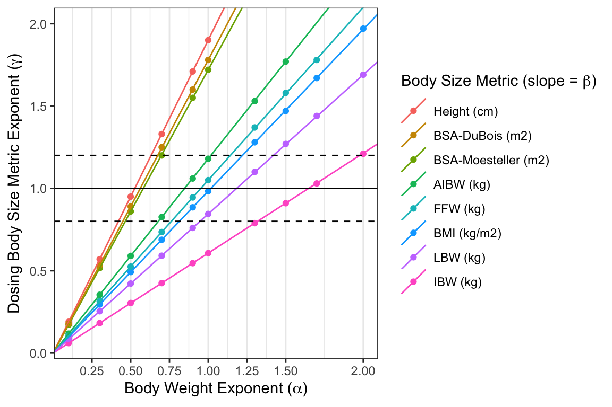